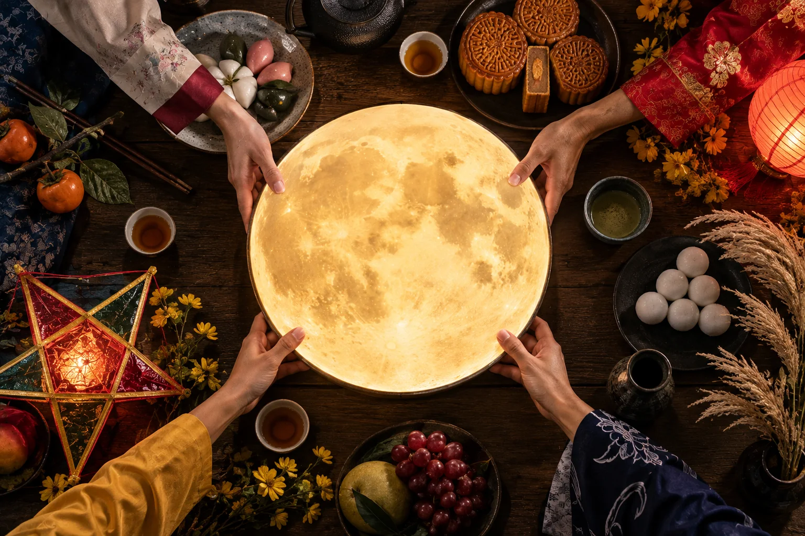
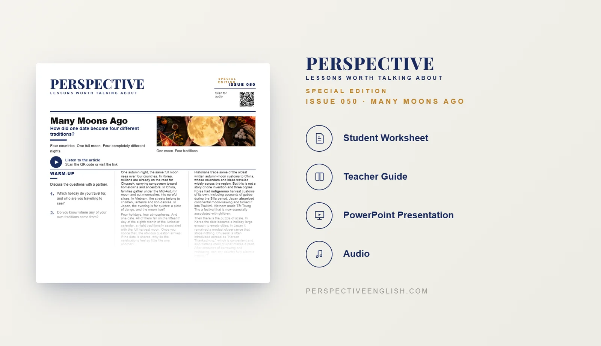

ISSUE 050 · SPECIAL EDITION
Moon Festival ESL Lesson
How did one date become four different traditions?
A ready-to-teach B1–B2 ESL lesson exploring Chuseok, Mid-Autumn Festival, Tết Trung Thu and Tsukimi, and asking how one shared place in the traditional calendar became four very different celebrations.
Also available in Collection 09, featuring Issues 046–050.

LESSON PREVIEW

ABOUT THIS LESSON
About This Moon Festival ESL Lesson
One autumn night, the same full moon rises over Korea, China, Vietnam and Japan, but what happens beneath it can look completely different. This B1–B2 ESL lesson explores four autumn moon traditions and asks how celebrations connected to the same traditional calendar date developed their own identities.
Students explore Chuseok in Korea, the Mid-Autumn Festival in China, Tết Trung Thu in Vietnam and Tsukimi in Japan. The article looks at shared influences across the region alongside Korea's indigenous harvest customs, Japan's moon-viewing tradition and Vietnam's transformation of the festival into a celebration especially associated with children.
Students then examine questions of cultural ownership and borrowing, curate a museum gallery about the four traditions, debate whether a global brand should profit from them, and consider whether a tradition changed and loved for centuries can ever truly belong to one country.
FROM THE ARTICLE
WHAT'S INCLUDED
What's Included in Many Moons Ago?
- Magazine-style B1–B2 ESL student worksheet
- Original reading and audio about four Asian autumn moon traditions
- Vocabulary matching and true-or-false comprehension activities
- Discussion questions about festivals, cultural identity, borrowing and tradition
- You Curate the Gallery critical-thinking task where students decide how a museum should present four traditions sharing one date
- Language-in-context vocabulary activity
- Role-play speaking challenge about a global brand selling products inspired by the four traditions
- 150–200 word opinion-writing task asking who a tradition belongs to after centuries of borrowing and change
- Teacher guide and complete answer key
- Ready-to-use classroom presentation
GET THE COMPLETE LESSON
Ready to Teach Many Moons Ago?
Get the complete Many Moons Ago ESL lesson individually, or get Issues 046–050 together in Collection 09.
Secure checkout and instant digital delivery through Payhip.